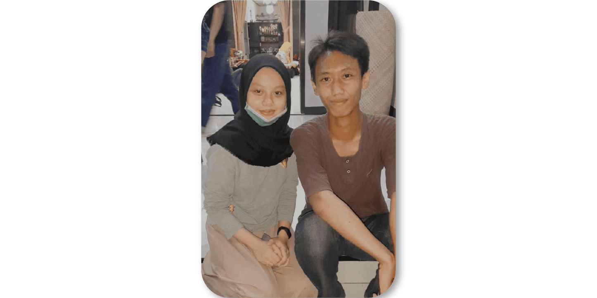

<!doctype html>
<!--
 Simple HTML login client side page based.
-->
<!DOCTYPE html>
<html>
   <body>
      <script>
         var password = "781annv";
         (function passcodeprotect() {
            var passcode = prompt("Passwodnya adalah apa yg udah di lihat di ke'dua");
            while (passcode !== password) {
               alert("kmrn anniv uda lihat, sekarang coba dibaca");
               return passcodeprotect();
            }
         }());
         alert('Haloo cintakuu, sayangkuu ❤ !!!');
      </script>
   </body>
</html>

<!--
Yahya a.p. 11.8.2023
-->
<html>
<head>
	<meta charset="UTF-8">
	<meta name="viewport" content="width=device-width, height=device-height, initial-scale=1.0, viewport-fit=cover">
	<meta name="apple-mobile-web-app-capable" content="yes" />

	<!-- Page ourskies.github.io/1st.anniversary Title -->
	<title>❤ 1st Anniversary</title>

	<!-- Compressed Styles -->
	<link href="css/slides.min.css" rel="stylesheet" type="text/css">

	<!-- jQuery 3.3.1 -->
	<script src="https://ajax.googleapis.com/ajax/libs/jquery/3.3.1/jquery.min.js"></script>

	<!-- Compressed Scripts -->
	<script src="js/slides.min.js" type="text/javascript"></script>

	<!-- Fonts and Material Icons -->
	<link rel="stylesheet" as="font" href="https://fonts.googleapis.com/css?family=Roboto:100,300,400,500,600,700|Material+Icons"/>
 
</head>
<body class="slides chain simplifiedMobile animated">

<!-- Navigation -->
<nav class="side pole">
  <div class="navigation">
    <ul></ul>
  </div>
</nav>

<!-- Slide 1 (#82) -->
<section data-name="slide-1" class="slide fade-6 kenBurns">
  <div class="content">
    <div class="container">
      <div class="wrap">

        <div class="fix-8-12 noSelect">
          <div class="relative ae-5">
            <div class="leftControl-82 ae-5 fromLeft" data-slider-id="82-0" data-slider-action="prev"><svg><use xmlns:xlink="http://www.w3.org/1999/xlink" xlink:href="#arrow-left"></use></svg></div>
            <div class="rightControl-82 ae-5 fromRight" data-slider-id="82-0" data-slider-action="next"><svg><use xmlns:xlink="http://www.w3.org/1999/xlink" xlink:href="#arrow-right"></use></svg></div>
            <ul class="slider clickable animated margin-bottom-2 ae-1 fadeIn" data-slider-id="82-0">
              <li class="selected"></li>
              <li></li>
              <li></li>
              <li></li>
            </ul>
            <ul class="controller dots ae-3 fromBottom" data-slider-id="82-0">
              <li class="dot selected"></li>
              <li class="dot"></li>
              <li class="dot"></li>
              <li class="dot"></li>
            </ul>
          </div>
          <div class="fix-7-12 margin-top-2">
            <h1 class="ae-5 fronLeft">Happy Anniversary Cintaa !!!</h1>
            <div class="light ae-6 fromrRight">
              <p>Hari ini, setahun yang lalu. Thanks for not leaving me! </p>
              <p class="tiny opacity-6"><span class="opacity-8">It was an really awsome ride. Now, let's take it to the next step.
              </span></p>
              Terimakasih ya untuk 1 tahunnya, mas seneng baaangeeet!!, super duper senengg!!! punya kamu di hidup mas (iya kamu, Amalia Rahma Arifin). Bukan soal <a href="111/" target="_blank" style="color: rgb(213, 209, 209)">ngomel</a>, marahan dan hal-hal lain yang adek kira merepotkan. Tapi tetap tentang adek yang harus selalu mas jaga senyumnya. Ga ada dan gamau ada yang berkurang, entah sayang mas ke adek/adek ke mas atau apapun!. Mas berharap senada yakin bahwa adek orang yang tepat dan dapat mengerti mas :). Bukan tentang batu-nya kepalamu atau kerasnya dirimu sayang. Mas tau Betapa lembut dan rapuhnya dirimu di dalam sana, dan mas nggapernah bosen buat jadi tempat ngomelmu, buat selalu ada buat adek. Terimakasih udah nerima mas sejauh ini, mas gatau apa yang bisa mas kasih ke adek dan sejauh ini semuanya masih kalimat, perlahan mas bakal buktiin, In Shaa Allah. Doakan mas ya!, ayo berjuang di tahun-tahun berikutnya sebagai sepasang kekasih, suami istri, sampai kakek nenek.. aamiiin Yaa Rabb.
            </div>
          </div>
        </div>
      </div>
    </div>
  </div>
  <div class="background" style="background-image:url(assets/img/background/img-82.jpg)"></div>
</section>


  <!-- Popup Video -->
  <div class="popup autoplay" data-popup-id="82-0">
    <div class="close"><svg><use xmlns:xlink="http://www.w3.org/1999/xlink" xlink:href="#close"></use></svg></div>
    <div class="content">
      <div class="container">
        <div class="wrap">
          <div class="fix-10-12">
            <div class="embedVideo popupContent">
              <iframe src="https://player.vimeo.com/video/101231747?color=ff0179&portrait=0" frameborder="0" webkitallowfullscreen mozallowfullscreen allowfullscreen></iframe>
            </div>
          </div>
        </div>
      </div>
    </div>
  </div>

<!-- Slide 2 (#75) -->
<section data-name="slide-2" class="slide fade-6 kenBurns">
  <div class="content">
    <div class="container">
      <div class="wrap">
      
        <div class="fix-10-12 toCenter">
          <h1 class="ae-1">It's about u!!</h1>
          <p class="tiny opacity-6"><em>Something u must know bout yourself!</em><span class="opacity-8"></span></p>
          Adeek, kamu tuh orangnya baaaikk banget sayang, peduli banget sama perasaan suatu makhluk terlebih atas sesuatu yg berada jaauuuh dibawahmu atau lebih lemah daripada kamu. Kamu tuh penuh dengan semangat dan keceriaan..! sampai-sampai mas cuman mau semua itu buat mas sendiri. Ya betul, mas cemburuan bukan atas kesalahanmu menjadi seorang "Amalia", namun karena mas sendiri dan hal itu benar !. Namun, adek juga harus tau mas tuh sayaang banget, jadi sayang juga ya sama mas, maafin mas kalo suka ngeselin. mas bakal belajar buat terus jadi lebih baikk, In Shaa Allah.
          <p></p>
          Adek juga tapi ya.., kurangin ngomong buruk soal kita terlebih kalo marah. Belajar buat kontrol emosi, terus gamau kalo adek gampang marahan juga, mas juga sih.. maaf ya.., buuat lain-lainnya sampai saat ini, kayaknya itu aja kok. ayo diperbaiki bareng, termasuk hal hal buruk di hari kemarin!. Supaya cepat kita <a href="halal/" target="_blank" style="color: rgb(92, 230, 73)">halal</a> juga kita ya cinta 😊❤. Aamiiin..!
          <p></p>
          </p>
          Udah buuaanyak banget hal yang mas lukuin bareng adek, dari yang awalnya "kecil" jadi "gedee" :p (wkwkwkwk), dan hal hal lain yang tentunya seruu banget :v. Ini mungkin sedikit tapi, "Tujuh (7)" foto ini merupakan sedikit dari yang paling mas kagumi dan tentunya kamu tau mereka punya momennya masing-masing. Percaya deh, kamu gabakal bosen lihat nih foto berkali-kali!!, wkwkwk.
          <p></p>
        </div>
        <div class="fix-12-12">
          <ul class="grid grid-75 masonry fixedSpaces ae-3 controller popupTrigger" data-popup-id="75-1" data-slider-id="75-1">
            <li class="col-3-12 col-tablet-1-3 col-phablet-1-2 col-phone-1-1 ae-6 fadeIn">
              
            </li>
            <li class="col-3-12 col-tablet-1-3 col-phablet-1-2 col-phone-1-1 ae-3 fadeIn">
              
            </li>
            <li class="col-3-12 col-tablet-1-3 col-phablet-1-2 col-phone-1-1 ae-2 fadeIn">
              
            </li>
            <li class="col-3-12 col-tablet-1-3 col-phablet-1-2 col-phone-1-1 ae-7 fadeIn">
              
            </li>
            <li class="col-3-12 col-tablet-1-3 col-phablet-1-2 col-phone-1-1 ae-9 fadeIn">
              
            </li>
            <li class="col-3-12 col-tablet-1-3 col-phablet-1-2 col-phone-1-1 ae-5 fadeIn">
              
            </li>
            <li class="col-3-12 col-tablet-1-3 col-phablet-1-2 col-phone-1-1 ae-4 fadeIn">
              
            </li>
          </ul>
        </div>  
                
      </div>
    </div>
  </div>
  <div class="background" style="background-image:url(assets/img/background/img-75.jpg)"></div>
</section>

<!-- Popup Gallery -->
<div class="popup animated" data-popup-id="75-1">
  <div class="close"><svg><use xmlns:xlink="http://www.w3.org/1999/xlink" xlink:href="#close"></use></svg></div>
  <div class="content">
    <div class="container">
      <div class="wrap spaces">
      
        <ul class="slider animated ae-1 fromAbove inlineBlock clickable popupContent disableSelect" data-slider-id="75-1" style="display: inline-block;">
          <li class="selected">
            
          </li>
          <li>
            
          </li>
          <li>
            
          </li>
          <li>
            
          </li>
          <li>
            
          </li>
          <li>
            
          </li>
          <li>
            
          </li>
        </ul>
        
      </div>
    </div>
  </div>
</div>

<!-- Slide 3 (#73) -->
<section data-name="slide-3" class="slide fade-6 kenBurns">
  <div class="content">
    <div class="container">
      <div class="wrap">
      
        <div class="fix-11-12">
          <ul class="flex reverse">
            <li class="col-6-12 left box-73">
              <h1 class="ae-2">Mau ngomong apalagi yaa..<span class="opacity-8"></span></h1>
              <p class="ae-3"><span class="opacity-8">Banyak yang masih bisa di sampein sebenernya, tapi mas rasa disini gausa dikasih terlalu banyak bumbu manis, nanti kalo diabetes yaapa.. mending liatin mas aja deh.. tanpa resiko :p wkwkwk. Yang jelas yaa.. MAS SAYANG BANGET SAMA ADEEK!!, IN SHAA ALLAH BAKAL TERUS GITUU SAMPE JANNAH... AAMIIIIN YAA RABB!!!</span></p>
              <p class="ae-"><span class="opacity-10"></span><em>Tiap kata mengandung <a href="18.8/" target="_blank" style="color: rgb(165, 50, 50)">arti</a>, jadi take a click not just looking wkwkwk.</em> Yaudah, ada samting nih, yuk main!!</p>
            </li>
            <li class="col-6-12 left ae-1 fromAbove">
              
            </li>
          </ul>

          <div class="fix-11-12">
            <ul class="grid fixedSpaces equal left grid-73">
              <li class="col-4-12 ae-4">
                <a href="game/" target="_blank" class="cell-73 rounded equalElement">
                  <p></p>
                  <i class="fa-gift" aria-hidden="true"></i>
                  <h3>Game nih, mau main ga? 🎮 </h3>
                  <p class="tiny opacity-6">Gamau juga gapapa :P</p>
                </a>
              </li>
            </ul>
          </div>
        </div>
        
      </div>
    </div>
  </div>
  <div class="background" style="background-image:url(assets/img/background/img-73.jpg)"></div>
</section>

<!-- Slide 8 (#95) -->
<section data-name="slide-8" class="slide fade-6 kenBurns">
  <div class="content">
    <div class="container">
      <div class="wrap">
        <div class="fix-6-12">
          <h1 class="huge ae-1 margin-bottom-2">Yah, Abiss.</h1>
          <p class="tiny opacity-6"><span class="opacity-8">I really really love u soo much!, semoga kita kedepan makin rukun akur dan dewasa dalam hal baik ya sayang. Aamiin. 
          </span></p>
          <p class="tiny opacity-6"><span class="opacity-8">Maaf cuman segini aja, jangan sebel sama mas loh... !, See u later with something like this :p. 
          </span></p>
          <p>ohh yaa <a href="banana/" target="_blank" style="color: rgb(255, 213, 3)">btw... 🍌🍌🍌</a></p>
          
        </div>
                
      </div>
    </div>
  </div>
  <div class="background" style="background-image:url(assets/img/background/img-95.jpg)"></div>
</section>

<!-- Panel Bottom #12 -->
<nav class="panel bottom lastSlideOnly">
  <div class="sections desktop">
    <div class="center">
      <ul class="menu uppercase">
        <li>Yahya A.P - 11.8.2023</a></li>
        <li>❤</a></li>
        <li>Happy Anniversary !!!</a></li>
      </ul>
    </div>
  </div>
</nav>

<!-- Loading Progress Bar -->
<div class="progress-bar blue"></div>
		
</body>
</html>
